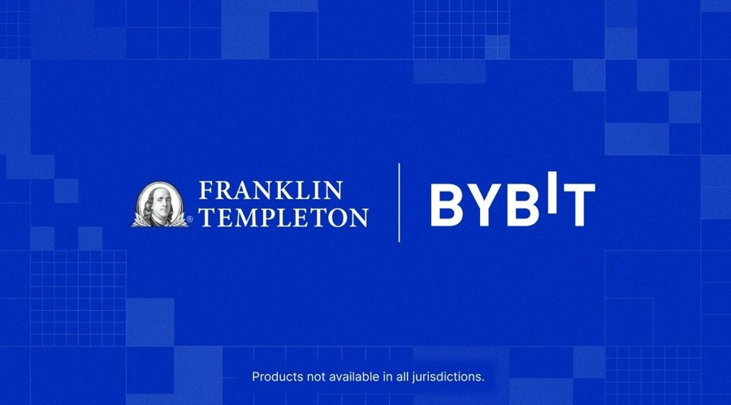

06 Finance Magnates 보도일 2026.09.28
Bybit, 프랭클린 토큰화 MMF 담보 수용

토큰화 펀드가 이제 담보로 쓰이는 단계로 들어갔다. Franklin Templeton은 자사 토큰화 머니마켓펀드 지분을 Bybit 거래 담보로 연결했다. 기관 고객은 수익을 계속 받으면서도 그 자산가치로 거래 신용을 열 수 있다.
무슨 일이 있었나
Franklin Templeton이 토큰화 머니마켓펀드Money market fund — 단기 안전자산에 투자하는 펀드 담보 모델을 Bybit로 확대했다. 적격 기관 고객은 거래소 밖에 보관한 펀드 지분을 담보로 맡기고 Bybit에서 거래 신용한도를 받을 수 있다.
담보는 Franklin Templeton의 Benji Technology Platform에서 발행한 토큰화 머니마켓펀드 지분이다. 고객은 ByCustody를 통해 지분을 담보로 설정한다. 그 대가로 Bybit에서 USDT나 USDC 표시 신용한도를 받는다. 지분은 오프거래소 커스터디Custody — 고객 자산을 보관·관리하는 업무에 남는다. 고객은 지분을 팔지 않아도 된다. 고객은 머니마켓펀드 수익도 계속 받을 수 있다. 두 회사는 적격 요건, 담보 헤어컷Haircut — 담보가치를 평가할 때 적용하는 할인율, 신용한도, 수수료, 청산 방식은 공개하지 않았다. 어떤 거래 상품에 이 한도를 쓸 수 있는지도 밝히지 않았다. 서비스 제공 지역도 공개하지 않았다.
별도 협업도 예고했다. Bybit와 Mantle 블록체인에서 지갑 기반 투자자를 위한 토큰화 자산관리 상품을 준비 중이다. 다만 이 상품은 아직 출시하지 않았다.
왜 지금 나왔나
토큰화 머니마켓펀드 수요가 커진 시점이다. 국제결제은행(BIS)은 2025년 9월 기준 이 시장을 90억 달러 이상으로 평가했다. Franklin Templeton은 이미 Binance와 비슷한 담보 프로그램을 운영하고 있다. BlackRock의 BUIDL도 Crypto.com과 Deribit에서 담보로 쓰이고, Binance는 기관 고객에게 BUIDL 오프거래소 담보Off-exchange collateral — 자산을 거래소 밖에 둔 채 거래 담보로 쓰는 구조를 허용한다.
시장 구조에서 바뀌는 것
이번 구조에서는 발행사, 수탁자, 거래소 역할이 분리된다. Franklin Templeton은 Benji에서 펀드 지분을 발행하고 소유 기록과 이전을 관리한다. ByCustody는 담보 자산을 거래소 밖에 보관한다. Bybit는 그 담보가치를 바탕으로 거래용 신용한도를 연다.
고객 입장에서는 거래소에 현금을 미리 많이 올려둘 필요가 줄어든다. 펀드 지분은 계속 보유하고 수익도 유지한다. 그 대신 신용공여 조건과 청산 규칙이 중요해진다. 원문은 이 핵심 조건을 아직 공개하지 않았다.
국내와의 접점
원문은 국내 적용에 대해 언급하지 않았다.
우리 업무로 옮기면
거래소 안 자산과 거래소 밖 자산을 함께 보는 담보 관리가 핵심 과제가 된다. 수탁 시스템과 거래 신용 시스템을 분리해도 실시간 담보가치와 청산 트리거를 맞출 수 있어야 한다.
- 검토할 팀: 수탁, 담보관리, 리스크, 대외연계, 회계
- 선행 과제: 외부 커스터디 잔고를 신용한도 엔진에 넣는 인터페이스 설계
- 확인할 질문: 담보 평가 시점과 가격 소스가 무엇인지
- 확인할 질문: 담보 자산 수익은 누구 계정에 어떻게 귀속되는지
- 확인할 질문: 담보 부족 때 자동 청산 권한이 누구에게 있는지
상품팀은 고객 설명 문구를 세밀하게 나눠야 한다. 원문은 헤어컷, 수수료, 청산 규칙, 지원 상품군을 밝히지 않았으니, 비슷한 구조를 검토할 때 이 항목을 먼저 채워야 한다.
원문 정보
제목: Franklin Templeton Extends Tokenised Money Market Collateral to Bybit
보도일: 2026.09.28